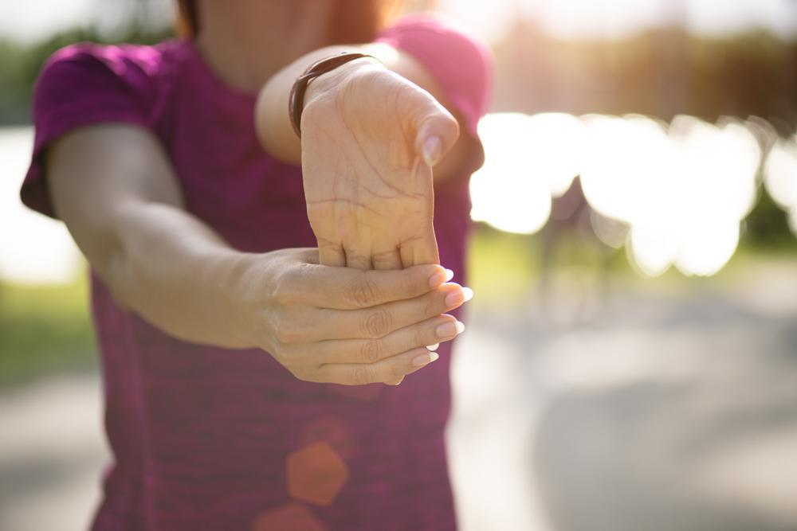

Date: 10/5/22 https://www.frontiersin.org/articles/10.3389/fspor.2021.693700/full Links to an external site.
Date: 10/7/22
PC Gaming Health https://www.eliteorthopaedic.com/blog/wrist-pain-exercises

3. Respond to the video: https://youtu.be/wYGfDCGrJ4A
4. Health and Activity log:
Click here!
Article link here:
While this article has a good introduction, it does little to back up its point; it does better at summarizing than arguing that video games do not play into shootings and acts of violence. First, it introduces the reader to how politicians, such as Donald Trump, would often blame video games for the increase in mass shootings. The article describes how the APA released a statement with false information that painted video games in a bad light; scholars later corrected the organization for this.
The author's only strong point to support his argument was in his self-research claims, as he is a professor of psychology at Stetson University.